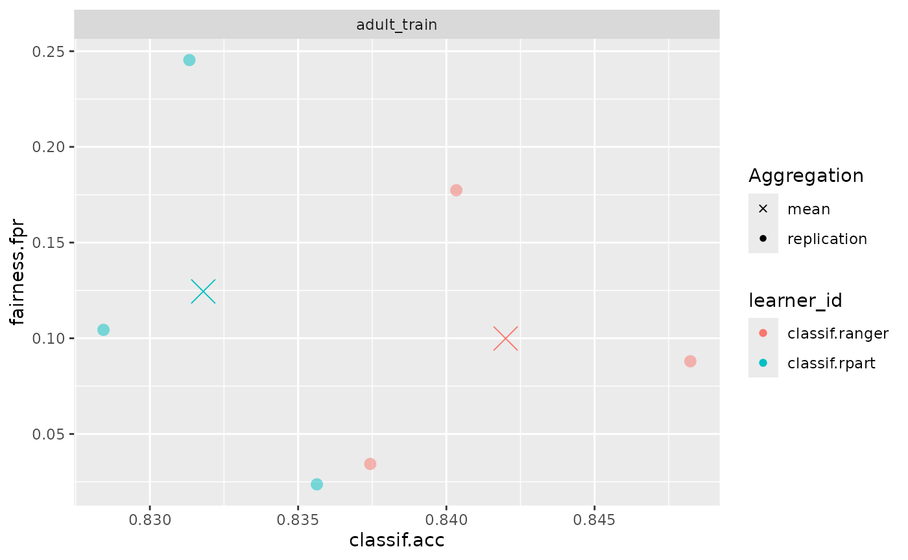
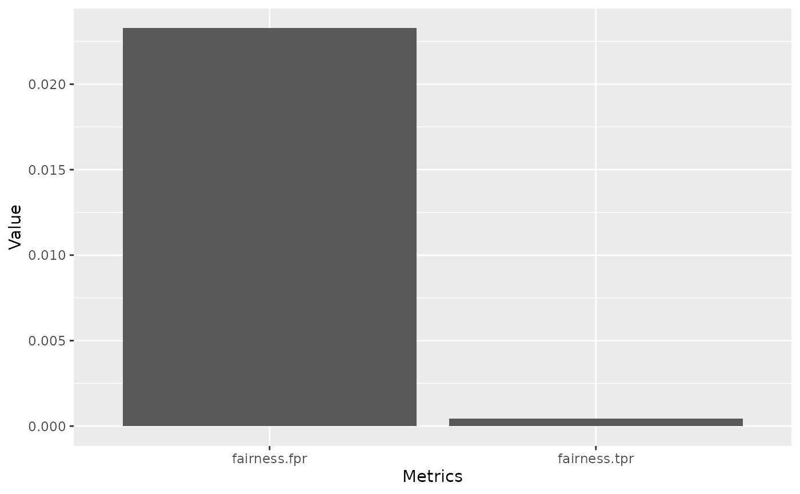
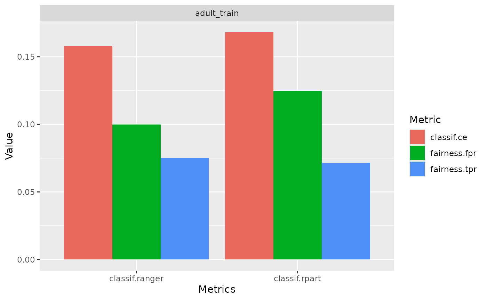
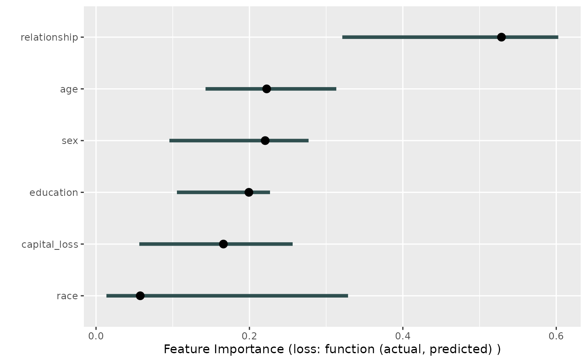

Why we need fairness visualizations:
Through fairness visualizations allow for first investigations into
possible fairness problems in a dataset. In this vignette we will
showcase some of the pre-built fairness visualization functions. All the
methods showcased below can be used together with objects of type
BenchmarkResult, ResampleResult and
Prediction.
The scenario
For this example, we use the adult_train dataset. Keep
in mind all the datasets from mlr3fairness package already
set protected attribute via the col_role “pta”, here the
“sex” column.
t = tsk("adult_train")
t$col_roles$pta
#> [1] "sex"We choose a random forest as well as a decision tree model in order to showcase differences in performances.
task = tsk("adult_train")$filter(1:5000)
learner = lrn("classif.ranger", predict_type = "prob")
learner$train(task)
predictions = learner$predict(tsk("adult_test")$filter(1:5000))Note, that it is important to evaluate predictions on held-out data in order to obtain unbiased estimates of fairness and performance metrics. By inspecting the confusion matrix, we can get some first insights.
predictions$confusion
#> truth
#> response <=50K >50K
#> <=50K 3496 490
#> >50K 264 750We furthermore design a small experiment allowing us to compare a
random forest (ranger) and a decision tree
(rpart). The result, bmr is a
BenchmarkResult that contains the trained models on each
cross-validation split.
Fairness Prediction Density Plot
By inspecting the prediction density plot we can see the predicted
probability for a given class split by the protected attribute, in this
case "sex". Large differences in densities might hint at
strong differences in the target between groups, either directly in the
data or as a consequence of the modeling process. Note, that plotting
densities for a Prediction requires a Task
since information about protected attributes is not contained in the
Prediction.
We can either plot the density with a Prediction
fairness_prediction_density(predictions, task)
or use it with a BenchmarkResult /
ResampleResult:
Fairness Accuracy Tradeoff Plot
In practice, we are most often interested in a trade-off between
fairness metrics and a measure of utility such as accuracy. We showcase
individual scores obtained in each cross-validation fold as well as the
aggregate (mean) in order to additionally provide an
indication in the variance of the performance estimates.
fairness_accuracy_tradeoff(bmr, msr("fairness.fpr"))
Fairness Comparison Plot
An additional comparison can be obtained using
compare_metrics. It allows comparing Learners
with respect to multiple metrics. Again, we can use it with a
Prediction:
compare_metrics(predictions, msrs(c("fairness.fpr", "fairness.tpr")), task)
or use it with a BenchmarkResult /
ResampleResult:
compare_metrics(bmr, msrs(c("classif.ce", "fairness.fpr", "fairness.tpr")))
Custom visualizations
The required metrics to create custom visualizations can also be
easily computed using the $score() method.
bmr$score(msr("fairness.tpr"))
#> nr task_id learner_id resampling_id iteration prediction_test
#> <int> <char> <char> <char> <int> <list>
#> 1: 1 adult_train classif.ranger cv 1 <PredictionClassif>
#> 2: 1 adult_train classif.ranger cv 2 <PredictionClassif>
#> 3: 1 adult_train classif.ranger cv 3 <PredictionClassif>
#> 4: 2 adult_train classif.rpart cv 1 <PredictionClassif>
#> 5: 2 adult_train classif.rpart cv 2 <PredictionClassif>
#> 6: 2 adult_train classif.rpart cv 3 <PredictionClassif>
#> fairness.tpr
#> <num>
#> 1: 0.06883238
#> 2: 0.06602544
#> 3: 0.08978175
#> 4: 0.05817107
#> 5: 0.06701629
#> 6: 0.08970016
#> Hidden columns: uhash, task, learner, resamplingInterpretability
Fairness metrics, in combination with tools from interpretable
machine learning can help pinpointing sources of bias. In the following
example, we try to figure out which variables have a high feature
importance for the difference in classif.eod, the equalized
odds difference. In the following example
set.seed(432L)
library("iml")
library("mlr3fairness")
learner = lrn("classif.rpart", predict_type = "prob")
task = tsk("adult_train")
# Make the task smaller:
task$filter(sample(task$row_ids, 2000))
task$select(c("sex", "relationship", "race", "capital_loss", "age", "education"))
target = task$target_names
learner$train(task)
model = Predictor$new(model = learner,
data = task$data()[,.SD, .SDcols = !target],
y = task$data()[, ..target])
custom_metric = function(actual, predicted) {
compute_metrics(
data = task$data(),
target = task$target_names,
protected_attribute = task$col_roles$pta,
prediction = predicted,
metrics = msr("fairness.eod")
)
}
imp <- FeatureImp$new(model, loss = custom_metric, n.repetitions = 5L)
plot(imp)
We can now investigate this variable a little deeper by looking at the distribution of labels in each of the two groups.
data = task$data()
data[, setNames(as.list(summary(relationship)/.N),levels(data$relationship)), by = "sex"]
#> sex Husband Not-in-family Other-relative Own-child Unmarried Wife
#> <fctr> <num> <num> <num> <num> <num> <num>
#> 1: Female 0.000000 0.3662420 0.03980892 0.1671975 0.26910828 0.1576433
#> 2: Male 0.611516 0.2048105 0.02332362 0.1231778 0.03717201 0.0000000We can see, that the different levels are skewed across groups, e.g. 25% of females in our data are unmarried in contrast to 3% of males are unmarried.